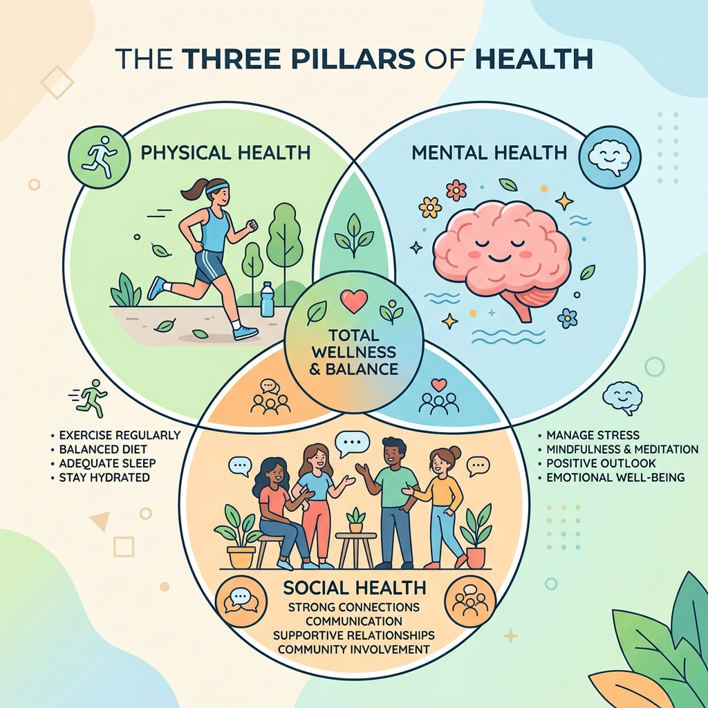
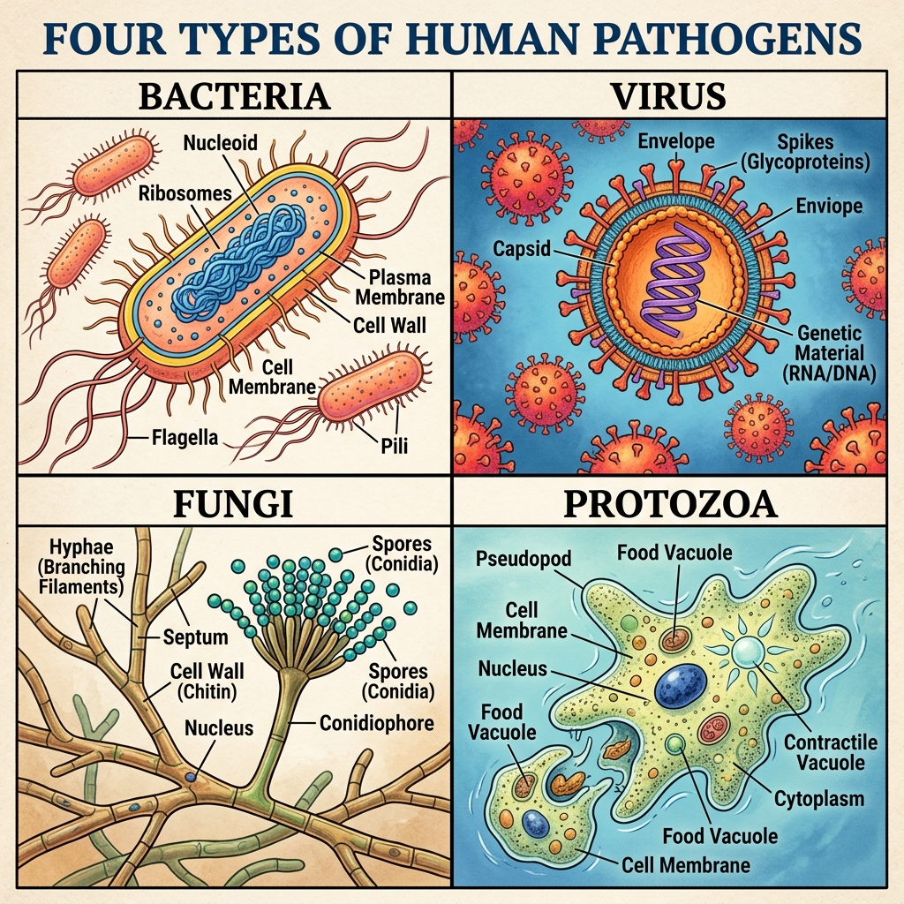
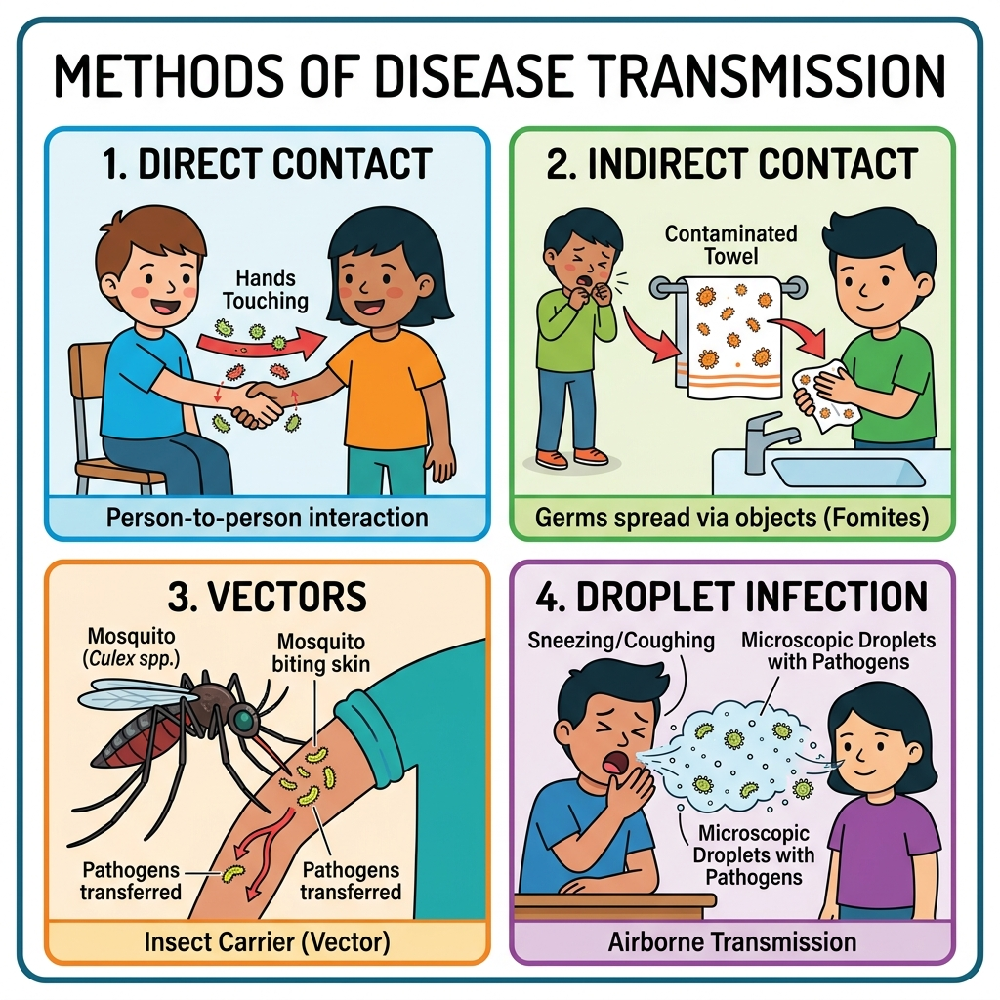
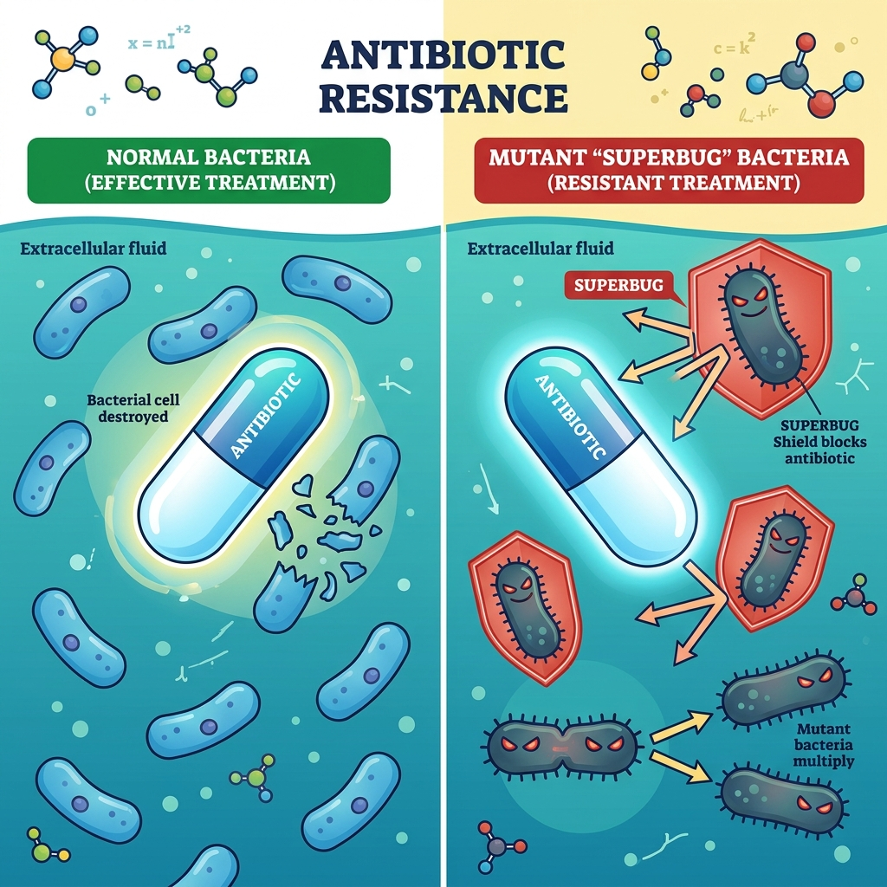

Vardaan Learning Institute
Class 8 Science • Chapter Notes
🌠vardaanlearning.com
📞 9508841336
Health: The Ultimate Treasure
1. Understanding Health
The World Health Organisation (WHO) defines health as a state of complete physical, mental, and social well-being, and not merely the absence of disease. True health means feeling energetic, thinking clearly, and building meaningful relationships.
Three Aspects of Health

- Physical Health: How fit and strong our body is (e.g., eating healthy food, proper sleep, exercise).
- Mental Health: How we feel and think (e.g., staying calm, handling stress, positive thinking).
- Social Health: How well we connect with others (e.g., making friends, helping others, being kind).
Concept
Health is holistic. A problem in one area can affect the others. For example, severe anxiety (poor mental health) can lead to loss of appetite (poor physical health) and withdrawal from friends (poor social health).
2. Habits & Environment
Staying healthy requires daily good habits and living in a clean environment.
Ways to Stay Healthy
- Eat a balanced diet with fresh fruits and vegetables.
- Maintain daily hygiene (bathing, washing hands, brushing teeth).
- Exercise regularly (walking, cycling, yoga) to strengthen muscles and control body weight.
- Get 7-8 hours of proper sleep to let the body repair itself.
- Say NO to harmful habits like smoking, chewing tobacco, or consuming alcohol.
Fact
The Air Quality Index (AQI) tells us how clean or polluted the air is. The AQI ranges from 0 to 500. A lower number means cleaner air, while a higher number indicates severe pollution which is harmful to the lungs.
3. Diseases: Types and Transmission
A disease is a condition that disturbs the normal working of our body or mind. Diseases are mainly categorized into two groups:
Communicable (Infectious) Diseases

These diseases spread from one person to another. They are caused by tiny microorganisms called pathogens.
- Bacteria: Cause diseases like typhoid and cholera.
- Viruses: Smallest germs causing common cold, flu, dengue, polio, and measles.
- Fungi: Cause skin infections like ringworm and athlete's foot.
- Protozoa: Single-celled organisms causing malaria and amoebiasis.

Modes of Transmission:
- Direct Contact: Touching infected people or sharing close contact.
- Indirect Contact: Sharing towels or utensils, consuming contaminated food/water.
- Vectors: Living carriers like mosquitoes and flies that transport germs (e.g., Anopheles mosquito carries malaria).
- Droplet Infection: Breathing in germs released when a sick person coughs or sneezes.
Non-Communicable Diseases (NCDs)
These illnesses do not spread from person to person. They develop due to lifestyle choices, poor diet, and lack of exercise. They are often long-lasting (chronic).
- Obesity: Excess body weight from junk food and lack of activity.
- Diabetes: Hormonal imbalance often linked to poor diet; symptoms include frequent urination and excessive thirst.
- Heart Disease: Caused by high cholesterol, stress, and lack of exercise.
- Asthma: Respiratory condition triggered by dust, smoke, or allergies.
4. Immunity and Vaccination
Our body has a built-in defense mechanism called the immune system that fights off harmful germs by producing special proteins called antibodies.
Important
Vaccination is the process of introducing a small, weak, or harmless part of a germ into the body. This trains the immune system to remember and fight the real disease without making the person sick. Edward Jenner created the world's first vaccine for smallpox.
5. Antibiotics and Resistance
Antibiotics are special medicines used to treat infections caused strictly by bacteria (they do NOT work against viruses like the common cold). They target bacterial cells to stop their growth.
Antibiotic Resistance

Antibiotic resistance is a severe global problem where bacteria adapt and survive the medicines meant to kill them. This happens due to:
6. Traditional and Modern Medicine
India has a rich history of traditional medicine systems:
- Ayurveda: Focuses on balancing the three doshas (vata, pitta, kapha) using herbs, diet, and yoga.
- Siddha: Uses herbs and purified minerals.
- Unani: Balances the body's four humours (blood, phlegm, yellow bile, black bile).
While traditional methods are great for everyday health, modern medicine is highly effective for controlling and treating serious, chronic conditions like diabetes, cancer, and heart disease through targeted drugs and diagnostics.